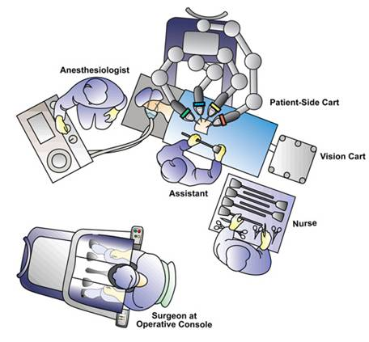
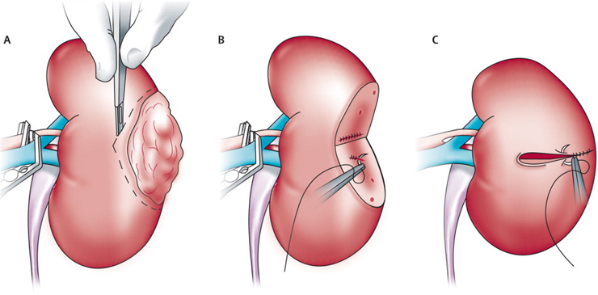

Saving the Kidney: Robotic Partial Nephrectomy
Saving the Kidney: Procedure & Risks
Robotic Partial Nephrectomy is a minimally invasive surgery to remove a renal tumor (mass) while preserving the rest of the kidney.
It is the preferred treatment for small-to-medium kidney tumors because saving kidney tissue lowers your risk of developing chronic kidney disease or needing dialysis in the future.
Part 1: The Surgical Steps (What Happens Inside)
Part 1: The Surgical Steps (What Happens Inside)
The surgery is performed using the da Vinci Surgical System and typically takes 2 to 4 hours.
Step 1: Positioning & Access
You will be placed on your side (flank position) to give the surgeon access to the kidney.
4–5 small "keyhole" incisions (8–12mm) are made on the abdomen to insert the robotic camera and instruments.

Step 2: Exposing the Kidney
The kidney sits behind the intestines. The surgeon carefully moves the colon (bowel) aside to reveal the kidney.
Hilar Dissection: The surgeon locates the main renal artery and vein. This is a critical step because we must temporarily stop blood flow to the kidney to cut out the tumor safely.
Step 3: Defining the Tumor (Ultrasound)
A specialized robotic ultrasound probe is placed directly on the kidney.
This helps the surgeon "see" inside the organ to mark exactly where the tumor ends and healthy tissue begins.
Step 4: Clamping (Ischemia)
Small clamps are placed on the kidney artery to stop blood flow.
"Warm Ischemia Time": This is the clock ticking while the kidney has no blood flow. The robot’s speed and precision allow us to keep this time short (usually under 20–25 minutes) to prevent kidney damage.
Step 5: Tumor Excision
Using robotic scissors, the tumor is cut out with a thin rim of healthy tissue (margin) to ensure no cancer cells are left behind.
Step 6: Reconstruction (Renorrhaphy)
This is the most complex part. The surgeon must sew the kidney back together in two layers:
Deep Layer: To close the urinary collecting system (preventing urine leaks) and stop deep bleeding.
Outer Layer: To pull the kidney edges together (like closing a clam).
Once sewn, the clamps are removed, and blood flow is restored to the kidney.

Part 2: Potential Complications & Risks
Partial nephrectomy is a complex surgery with specific risks related to cutting into a highly vascular organ.
A. Specific Risks of Partial Nephrectomy
1. Bleeding & Transfusion
The kidney filters 20% of the body's blood. While robotic tools minimize blood loss, there is a risk of bleeding during or after surgery.
Risk: Occasionally (<5%), a blood transfusion is needed.
2. Conversion to Radical Nephrectomy (Total Removal)
The Risk: Sometimes, once the surgeon sees the tumor, it may be too close to major blood vessels, too deep, or bleeding too heavily to be saved safely.
The Outcome: For your safety, the surgeon may make the decision during surgery to remove the entire kidney (Radical Nephrectomy) to ensure the cancer is gone and bleeding is controlled. This happens in less than 5% of cases.
3. Urine Leak (Urinoma)
Because the tumor often sits near the urine collection system, cutting it out can create a leak.
Outcome: We usually leave a small drain tube in your side after surgery. If a leak occurs, it usually heals on its own with the drain in place. Occasionally, a ureteral stent (a thin internal tube) must be placed to help it heal.
B. General Surgical Risks
Infection: At the incision sites or urinary tract.
Hernia: A bulge at the incision site (rare with small robotic cuts).
Ileus: Temporary slowing of the bowels, causing bloating or constipation.
Part 3: Recovery & Aftercare
In the Hospital (1–3 Days)
Drain: You will likely wake up with a small drain tube coming out of your side. This monitors for internal bleeding or urine leaks. It is usually removed before you go home.
Catheter: A urinary catheter will be in place overnight and typically removed the next morning.
Pain: Most patients manage well with minimal pain medication due to the small incisions.
At Home
Activity: No heavy lifting (over 10 lbs) for 4–6 weeks. This is critical to prevent the internal kidney stitches from popping open.
Work: Desk jobs can be resumed in 2–3 weeks.
Follow-up: You will need regular CT scans or MRIs for a few years to ensure the tumor does not return